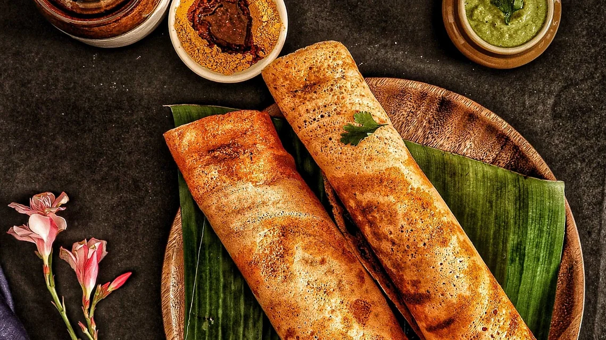

Ingredients
- 1 cup rice
- 1/4 cup urad dal
- 1/2 tsp salt
- Water as needed
Instructions
- Soak rice and urad dal separately for 4-5 hours.
- Grind to a smooth batter and mix together. Let ferment overnight.
- Heat a non-stick pan, pour a ladle of batter, spread thinly, and cook until golden.
- Serve hot with coconut chutney and sambar.
Tips
- Ensure the pan is hot for crisp dosa.
- Fermentation improves taste and texture.
- Use a ladle to spread batter evenly.